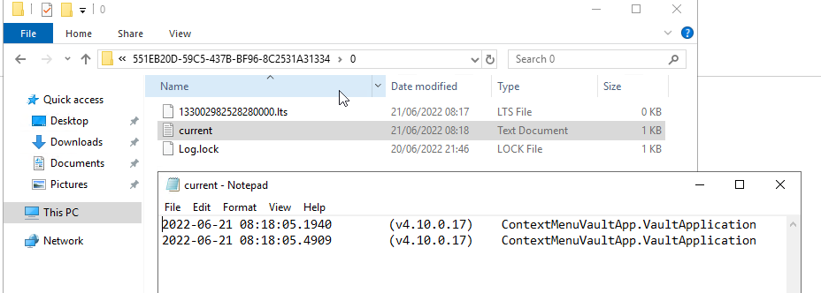

Configuration¶
Dependent objects¶
Release 4.5.14.56 will add new tables and procedures. Use the following script to check if it exists.
select * from sys.objects where name in ('MFContextMenuQueue','spMFUpdateContextMenuQueue')
Warning
The queue processing functionality of the context menu is reliant on using a SQL agent. This feature cannot be deployed with SQL Express editions.
The configuration has the follow key steps
create custom procedure for the action to be performed
configure Context Menu in M-Files to connect with SQL
add rows in the MFContextMenu for the actions
add scripts to the custom procedure for processing the queue
add action script in event handler or workflow action
add agent to process the queue
Custom procedure for processing update action¶
The first step is to create a SQL procedure to perform the action to be triggered from M-Files. This could include any operation, but it is likely to be, or include triggering the update of the underlying object from M-Files to SQL. This procedure must include specific elements highligted below. Example Procedure 90.101.Custom.CMMFiles_UpdateSQL is a complete procedure to update the context object using a trigger in M-Files.
insert into table Insert a new row into MFContextMenuQueue before the main process start. Example script snippet
-- Get the class table name
SELECT @MFTableName = TableName
FROM dbo.MFClass
WHERE MFID = @ClassID
AND IncludeInApp > 0;
--Insert rows in MFContextMenuQueue to capture action from MF
BEGIN TRY
DECLARE @updateCycle INT
SET @SQLQuery = N'UPDATE ' + QUOTENAME(@MFTableName) + N'
SET process_id = 0
WHERE objid = @ObjectID';
EXEC sys.sp_executesql @SQLQuery, N'@ObjectID int', @ObjectID;
SELECT @ContextMenuLog_ID = MIN(mcmq.id)
FROM dbo.MFContextMenuQueue AS mcmq
WHERE mcmq.ObjectID = @ObjectID
AND mcmq.ObjectType = @ObjectType;
IF @ContextMenuLog_ID > 0
SELECT @updateCycle = UpdateCycle FROM dbo.MFContextMenuQueue AS mcmq WHERE id = @ContextMenuLog_ID
BEGIN
UPDATE mcmq
SET mcmq.Status = 0, @updateCycle = @updateCycle + 1
FROM dbo.MFContextMenuQueue AS mcmq
WHERE mcmq.ObjectID = @ObjectID
AND mcmq.ObjectType = @ObjectType
AND @ObjectVer <= mcmq.ObjectVer;
DELETE FROM dbo.MFContextMenuQueue
WHERE ObjectID = @ObjectID
AND ObjectType = @ObjectType
AND ObjectVer <> ISNULL(@ObjectVer, 0)
AND id <> @ContextMenuLog_ID;
END;
ELSE
BEGIN
INSERT INTO dbo.MFContextMenuQueue
(
ContextMenu_ID,
ObjectID,
ObjectType,
ObjectVer,
ClassID,
Status,
UpdateCycle,
ProcessBatch_ID,
UpdateID,
CreatedOn
)
VALUES
(@ID, @ObjectID, @ObjectType, @ObjectVer, @ClassID, 0, 1, @ProcessBatch_ID, NULL, @StartTime);
SET @ContextMenuLog_ID = @@IDENTITY;
END;
END TRY
BEGIN CATCH
SET @DebugText = N'FAILED ';
SET @DefaultDebugText = @DefaultDebugText + @DebugText;
IF @Debug > 0
BEGIN
RAISERROR(@DefaultDebugText, 16, 1, @ProcedureName, @ProcedureStep);
END;
END CATCH;
check result of update Get the version of the object that has been update. Place this script snippet just after using MFUpdateTable with updatemethod 1
--validate that update has taken place
DECLARE @VersionUpdated INT;
SELECT @VersionUpdated = muh.NewOrUpdatedObjectDetails.value('(/form/Object/@objVersion)[1]', 'int')
FROM dbo.MFUpdateHistory AS muh
WHERE muh.Id = @Update_ID;
--update queue with result
BEGIN TRAN;
UPDATE mcl
SET mcl.UpdateID = @Update_ID,
mcl.ObjectVer = @VersionUpdated,
mcl.ProcessBatch_ID = @ProcessBatch_ID,
mcl.updateCycle = mcl.UpdateCycle + 1
mcl.Status = CASE
WHEN ISNULL(@ObjectVer, 0) <= @VersionUpdated THEN
1
ELSE
-1
END
FROM dbo.MFContextMenuQueue mcl
WHERE mcl.id = @ContextMenuLog_ID;
COMMIT;
Setup the action in M-Files¶
Actions are triggered in M-Files based on the application of the context menu in the Vault. Consult Installing the Context Menu to install the context menu functionality.
Following is an example script for an afterCheckInChanges event handler action. Note that the action name must correlate with the action name in MFContectMenu
Option Explicit
Dim oProperties : Set oProperties = Vault.ObjectPropertyOperations.GetProperties(ObjVer)
Dim ClassID
ClassID= Vault.ObjectPropertyoperations.GetProperty(ObjVer, 100).value.GetLookupID
Dim LastModifiedUserID
LastModifiedUserID = Vault.ObjectPropertyoperations.GetProperty(ObjVer, 23).value.GetLookupID
Dim VendorClassID : VendorClassID = 94
Dim MFSQLConnectUserID : MFSQLConnectUserID = 36
If (VendorClassID = ClassID and LastModifiedUserID <> MFSQLConnectUserID) Then
Dim strInput
strInput = "{""ObjectID"" : "&ObjVer.ID &", ""ObjectType"" : "&ObjVer.Type &", ""Objectver"" : "&ObjVer.Version&",""ClassID"" : "&ClassID&", ""ActionName"" : ""Updateprop_EventHandler"", ""ActionTypeID"": ""5""}"
Dim strOutput
strOutput = Vault.ExtensionMethodOperations.ExecuteVaultExtensionMethod("PerformActionMethod", strInput)
'Err.Raise MfScriptCancel, strOutput
End If
Event handlers¶
Use the AfterCheckinChanges event handler for the updating SQL from M-Files. A separate event handler - AfterCreateNewObject - must be used to catch the creation of new objects if required. The same procedure can be applied for creation events.
Adding SQL Agent¶
The final step of the configation is to setup an agent that can trigger the spMFUpdateContextMenuQueue procedure. This procedure will check for any unprocessed items in the queue and process all the open items. The frequency of the updates should be considered in the light of the type of operation that is being supported, but is quite feasible to be set to 1 minute intervals. Be aware that this could have a performance impact.
Every time the SQL agent runs it will process the oldest unprocessed queue item and will retry the item 5 times. This is controlled by the agent step and checking the update cycle.
Consider having a control procedure to start and stop the agent to avoid it running in the background if updates using the event handler is only occasaional.
Sample code for the step in the SQL agent is below
Declare @id int, @UpdateCycle int
SELECT @id=min(sq.id), @UpdateCycle = MAX(isnull(UpdateCycle,0)) FROM MFContextMenuQueue sq WHERE sq.Status <> 1
IF @ID > 0 and @UpdateCycle < 6
BEGIN
EXEC dbo.spMFUpdateContextMenuQueue @id
END
Testing¶
On the completion of the configuration, test the setup by making a change to the class object.
MFContectMenuQueue should show the result
SELECT * FROM dbo.MFContextMenuQueue AS mcmq

The status = 1 in the above example implies that the record was that the version of the object in M-Files after checkin is the same as the version of the object in the class table after update.
Status 0 implies that the action has been received from M-Files but no processing took place. Status -1 implies that the action has been received from M-Files but after processing, the versions are different.
The following script will show the results for updating a specific property from the underlying log tables. Note that the propval in this example will report the 8th property in the XML record. The next script will highlight how to get the row number of the property
SELECT pb.CreatedOnUTC,
pb.Status,
pb.LogText,
pbd.ColumnValue,
uh.Id,
uh.ObjectVerDetails.value('(/form/objVers/@objectID)[1]', 'varchar(100)') AS objid,
uh.ObjectVerDetails.value('(/form/objVers/@version)[1]', 'varchar(100)') AS version,
uh.NewOrUpdatedObjectDetails.value('(/form/Object/properties/@propertyValue)[8]', 'varchar(100)') AS propval
FROM dbo.MFProcessBatch pb
INNER JOIN dbo.MFProcessBatchDetail pbd
ON pb.ProcessBatch_ID = pbd.ProcessBatch_ID
LEFT JOIN dbo.MFUpdateHistory uh
ON uh.Id = pbd.Update_ID
WHERE pbd.ColumnName = 'NewOrUpdatedObjectDetails' AND uh.ObjectVerDetails.value('(/form/objVers/@objectID)[1]', 'varchar(100)') = 578
The image show all the instances where the specific object has been processed and the property value and version for the specific update.
The following script wlll allow you to identify the row number of the property being monitored (as in row 8 in the above example.) Inspect the xml record for one of the updates that has taken place.
SELECT NewOrUpdatedObjectDetails
FROM dbo.MFUpdateHistory uh
WHERE uh.id =1247

Alternatively use a script to list the properties in sequence.
DECLARE @props XML
DECLARE @Hdoc INT
SELECT @props =NewOrUpdatedObjectDetails
FROM dbo.MFUpdateHistory uh
WHERE uh.id =1247
EXEC sp_xml_preparedocument @hdoc OUTPUT ,@props
SelECT * FROM OPENXML( @hdoc ,'/form/Object/properties',1)
WITH
(propertyId INT, dataType VARCHAR(100), propertyValue VARCHAR(100))
EXEC sp_xml_removedocument @Hdoc
Troubleshooting¶
no entry in MFContextMenuQueue
check that the correct actionname is included in the event handler script
validate that the insert statement has been included in the custom procedure
check MFContextMenu table to validate that the event is reaching SQL
nothing is reaching SQL
check cross referencing of MFContextMenu with the event handler scripts and the SQL procedure
check connnection in the M-Files Configurator
the queue is not being processed
check that the agent is running
deletions are not being processed
validate the separate event handler, custom procedure and entry in MFContextMenu
created objects is not being processed
a sepearate event handler must point to the same procedure and MFcontextMenu item as the update procedure